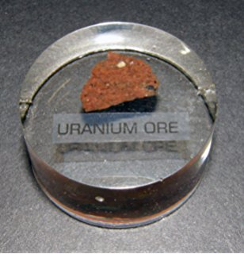
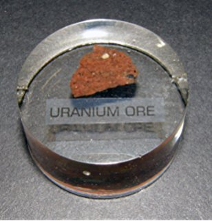

CORRECT!
The activity of the radioisotopes used for Medical diagnosis is about 70 million Bq while that of 1 kg of Uranium ore is only about 25 million Bq. Bequerel (Bq) is a unit of radioactivity defined a 1 disintegration per second.
The Nuke Quiz #1
Question 2
Which of these do you think is more radioactive?
 
